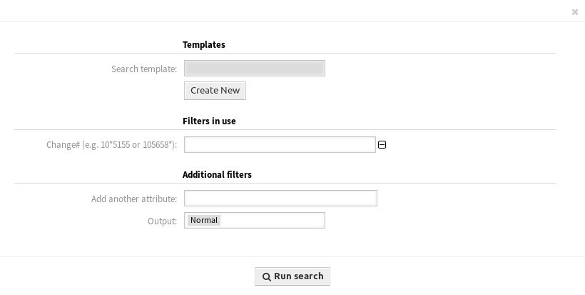

Suche¶
Verwenden Sie diese Ansicht, um nach Changes zu suchen.

ITSM Change suchen
So suchen Sie nach Changes:
- Klicken Sie auf den Menüeintrag Suche im Menü ITSM Changes.
- Füllen Sie die Pflichtfelder aus.
- Klicken Sie auf die Schaltfläche Suche ausführen.
- Schauen Sie sich die Suchergebnisse an.

Suchergebnisse
So begrenzen Sie die Anzahl der angezeigten Changes pro Seite:
- Klicken Sie auf das Zahnradsymbol in der oberen, rechten Ecke des Übersichts-Widget.
- Wählen Sie die maximale angezeigte Anzahl der Changes pro Seite.
- Klicken Sie auf die Schaltfläche Speichern.
So schauen Sie sich Details eine Change an:
- Klicken Sie in der Liste auf einen Change.

ITSM Change-Detailansicht
Die angezeigten Attribute können über die Systemkonfiguration definiert werden. Nicht alle Attribute werden standardmäßig angezeigt. Die möglichen Attribute sind:
ActualEndTime- Datum und Zeit zu der die Umsetzung des Changes abgeschlossen wurde.
ActualStartTime- Datum und Zeit zu der die Umsetzung des Changes begonnen wurde.
Category- Kategorie oder Typ des Change.
ChangeBuilder- Name des Change-Builder.
ChangeManager- Der Name des Change-Manager.
ChangeNumber- Vom System erzeugte Change-Nummer.
ChangeState- Change-Status.
ChangeStateSignal- Indikator für den Change-Status, der als Signalfarbe angezeigt wird.
ChangeTime- Datum und Zeit zu der der Change geändert wurde.
ChangeTitle- Name des Change.
CreateTime- Datum und Zeit zu der der Change erstellt wurde.
DynamicField_ChangeFieldName- Dynamisches Feld, das dem Change zugeordnet ist.
Impact- Erwarteter Effekt des Change.
PlannedEndTime- Datum und Uhrzeit des Abschlusses der geplanten Change-Umsetzung.
PlannedStartTime- Datum und Uhrzeit des geplanten Starts der Umsetzung.
Priority- Prioritäts-Stufe des Changes.
RequestedTime- Das vom Kunden gewünschte Umsetzungsdatum.
Services- Services, die vom Change beeinflusst werden.
WorkOrderCount- Anzahl der Arbeitsaufträge, die mit dem Change zusammenhängen.
Siehe auch
Siehe Einstellung ITSMChange::Frontend::AgentITSMChangeSearch###ShowColumns, um die angezeigten Attribute zu definieren.